Git Branch Merge
- buat folder baru faizal-test-repo2
- kita insialisasi git
- kita buat file baru mahasiswa.html
- kita edit
- -am : add, message
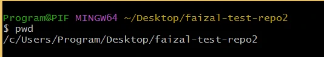
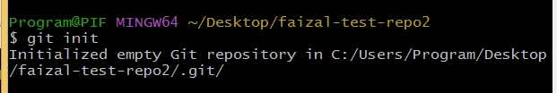
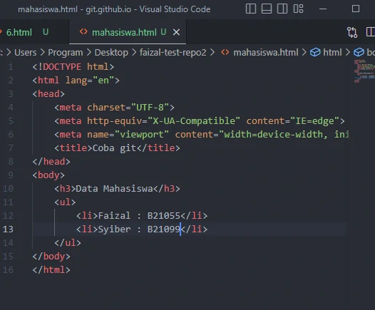
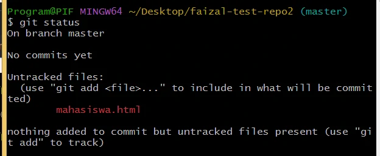
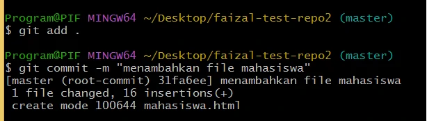
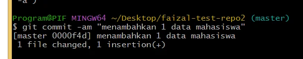
git branch
- melihat branch
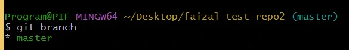
git branch [branch-baru]
- membuat branch baru
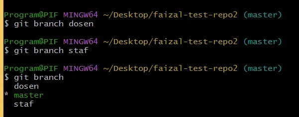
git log --all --decorate --oneline --graph
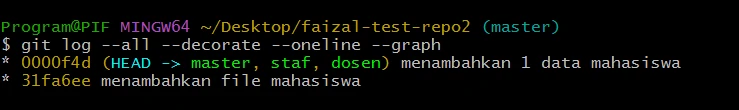
membuat alias
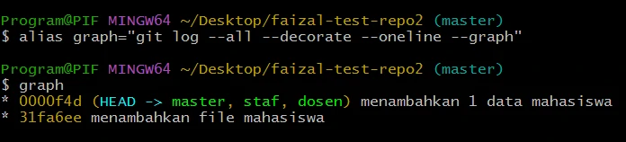
berpindah branch
- git checkout [nama-branch]
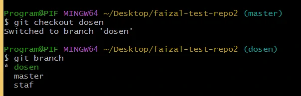
- buat file baru nama desen.html
- kemudia kita tambahkan dan commit
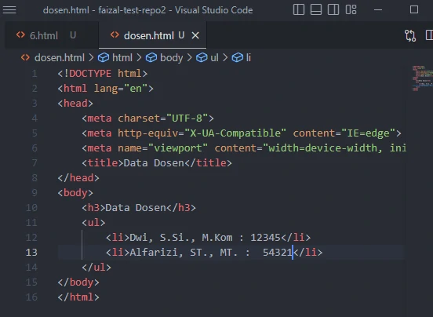
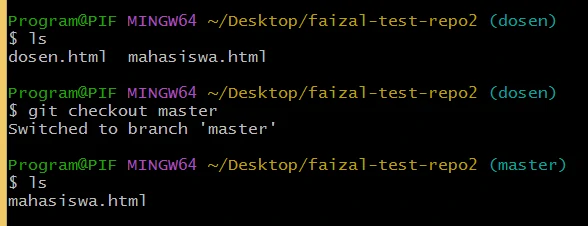
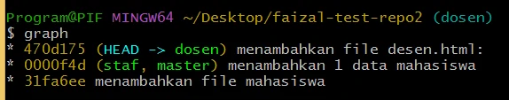
kita pindah ke branch staff
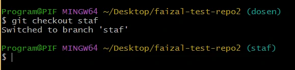

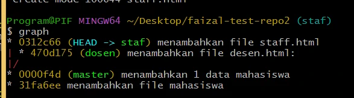
Jenis Merge
- Fast Forward
- Three-way Merge
Fast Forward
- terjadi ketika branch yang kita gabungkan itu berada dalam jalur langsung / direct path
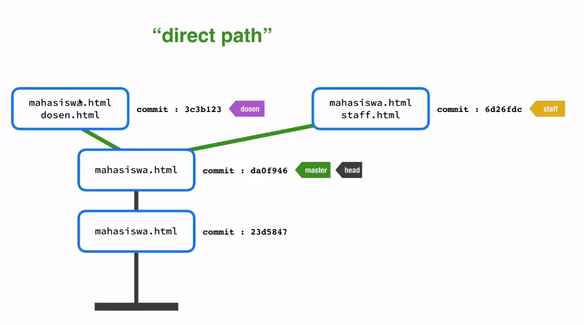
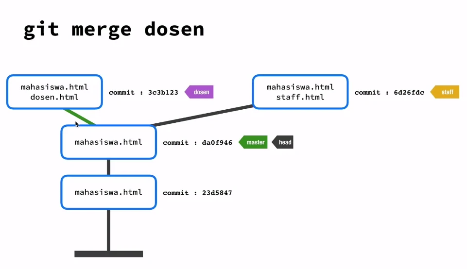
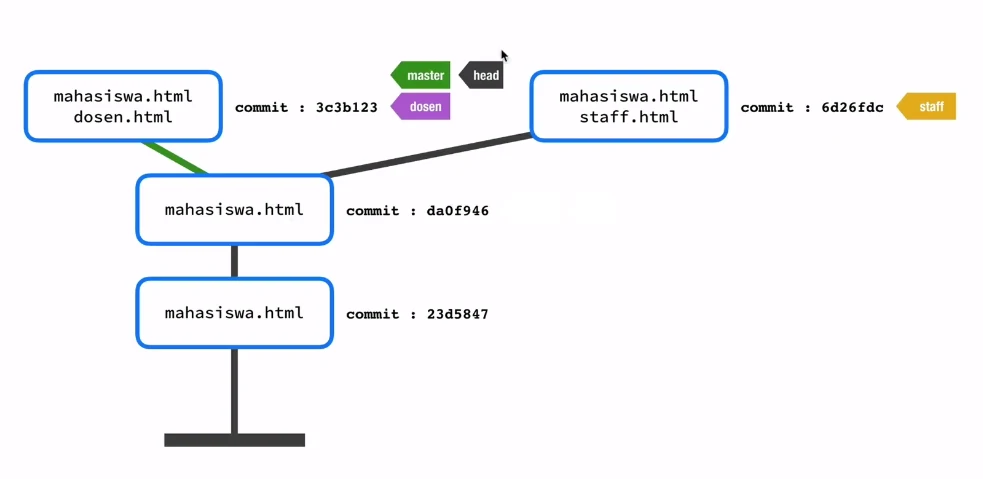
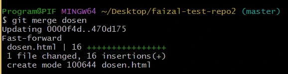
Menghapus Branch
- perintah branch yang sudah dimerge
- git branch --merge
- menghapus branch
- git branch -d dosen
- jika ingin menghapus branch staf
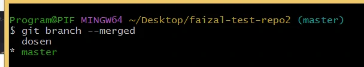
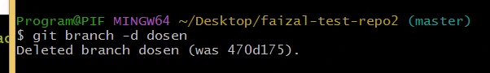
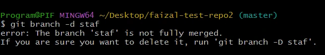
Merge staff (Three-way Merge)
- Three-way Merge : ngemerge sambil ngomit
- git merge staf -m "[pesan]"
- menghapus branch staf
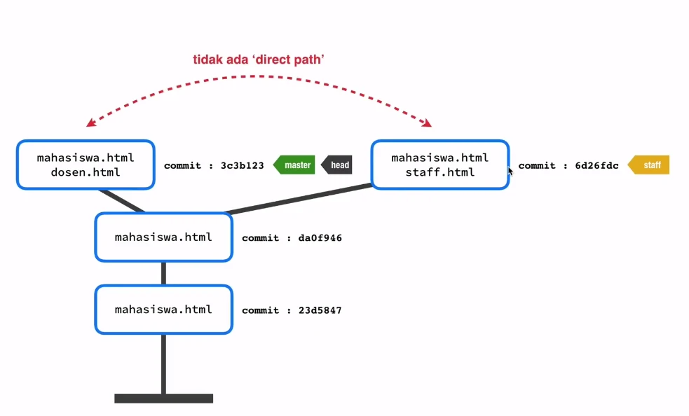
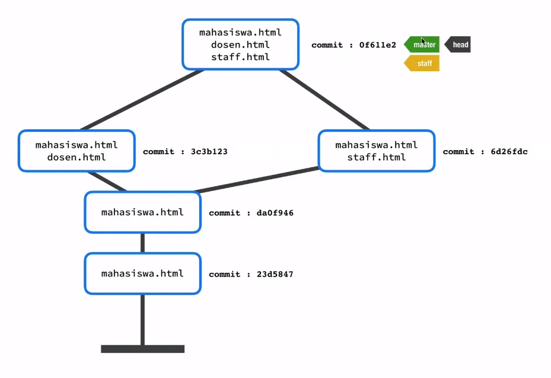
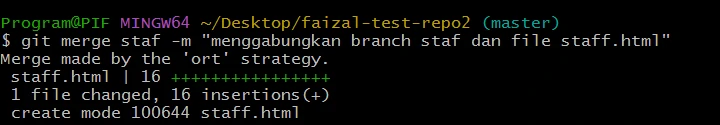
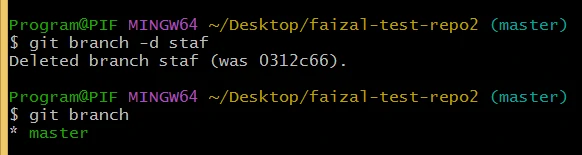